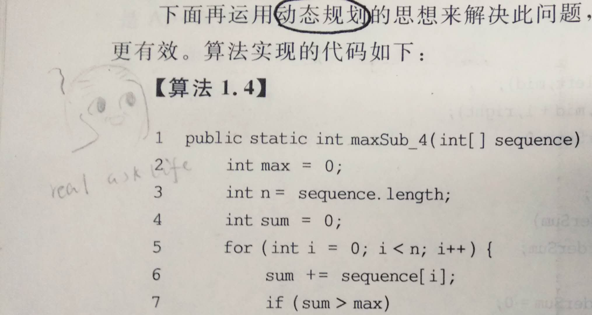

做题顺序：azl397985856 - leetcode 经典题目的解析
题目：53. 最大子序和
解析指路：azl397985856 - 53.maximum-sum-subarray-cn.md
题目
给定一个整数数组 nums ，找到一个具有最大和的连续子数组（子数组最少包含一个元素），返回其最大和。
示例:
1 | |
进阶:
如果你已经实现复杂度为 O(n) 的解法，尝试使用更为精妙的分治法求解。
分析
这道题直接出现在简单题里，还第三题就遇到，我真是活生生地惊到了……
但是这题其实是老相识了，我的数据结构教材《数据结构——Java语言描述（清华大学出版社）》的1.3章节的例子就是这题。具体来说，这题有穷举法、分治法、动态规划这几种主要的方法来求解。主要思想如下：
穷举法：TODO
分治法：TODO
动态规划：对整个数组进行一次扫描；
将当前元素加在sum里面，如果导致sum<0，说明到当前位置的子序列可舍弃，（因为小于零的数如果加在最大值上面，必然导致最大值变小）那么此时将sum置为当前元素的值；而如果sum>0，sum不需要改变。
随后将sum与max值比较，保留更大者。
代码
JAVA实现
分析也分析了，思想也总结了，但是为什么还要写这么多字，为什么要Cue那本教材呢。
因为教材给的答案在我看来是考虑不周的。
理由是，这本教材提供的方法，在数组内全为负整数的情况下，会返回0。
1 | |
引自：《数据结构——Java语言描述（清华大学出版社）》第一章 绪论 【算法1.4】
彩蛋：学到这里那会我无论如何都理解不了书上这段在干什么，于是我留下了一个秃头的表情包和一个颤抖的问号：

和朋友讨论过以后，朋友提出“空集是所有集合的子集”，认为这么返回无可厚非。但是在本题条件下显然是错误的。
根据教材提供的思想，对这段代码进行改进：在某元素以前的子序和小于零时，使sum置为当前元素。
1 | |
C++实现
1 | |
思想
动态规划
摘录之前看到一个关于动态规划的回答：
引自：什么是动态规划（Dynamic Programming）？动态规划的意义是什么？ - 阮行止的回答 - 知乎
【DP三连】
设计DP算法，往往可以遵循DP三连：
我是谁？ ——设计状态，表示局面
我从哪里来？ ——设计转移
我要到哪里去？
我对这位答主的回答稍作了调整，因为状态的推算可以得出状态转移方程，但是得出状态转移方程以后，最后并不一定就得到了所求解。所以我将“设计转移”移到了第二条上。
以本题为例：
首先是设计状态：
记
$$\sum_{x = 0}^{i}nums\left [ x \right ]$$
为到当前位置 i 的子序列和，那么初始化工作就是
$$\sum_{x = 0}^{i}nums\left [ x \right ] = nums\left [ i \right ]$$
其次，状态i从哪里推过来？
当
$$\sum_{x = 0}^{i-1}nums\left [ x \right ]>0$$
$$\sum_{x = 0}^{i}nums\left [ x \right ]=\sum_{x = 0}^{i-1}nums\left [ x \right ]+nums\left [ i \right ]$$
否则
$$\sum_{x = 0}^{i}nums\left [ x \right ] = nums\left [ i \right ]$$
对前面的两个式子进行简化，得到状态转移方程：
$$\sum_{x = 0}^{i}nums\left [ x \right ]=max { \sum_{x = 0}^{i-1}nums[ x ]+nums[ i ], nums[ i ] }$$
最后，开头说过，
$$\sum_{x = 0}^{i}nums\left [ x \right ]$$
为到当前位置 i 的子序列和，但是并不一定是全局的最大子序列和，所以需要始终保留一个全局的最大值，使每个产生的
$$\sum_{x = 0}^{i}nums\left [ x \right ]$$
与之比较。